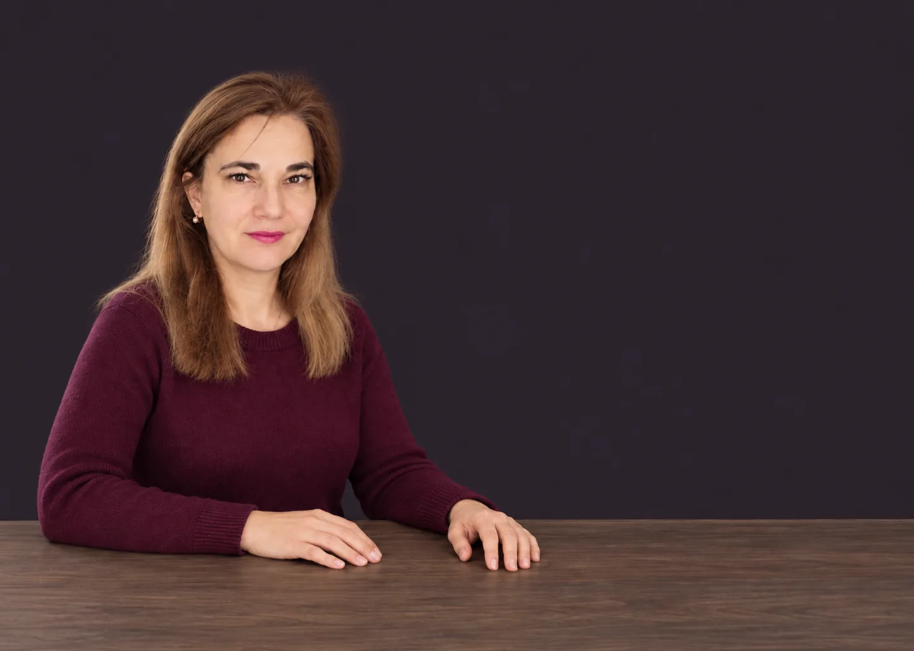
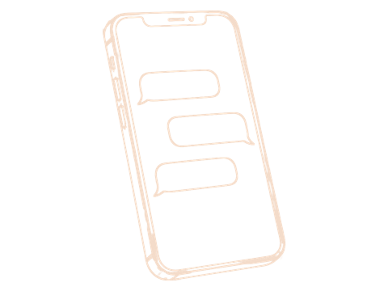
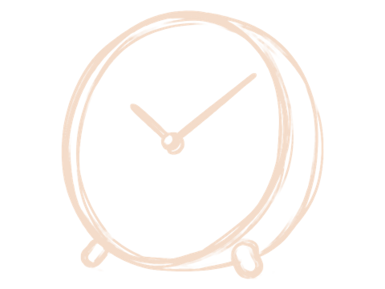
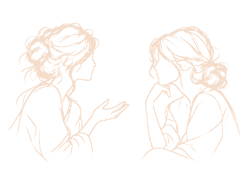
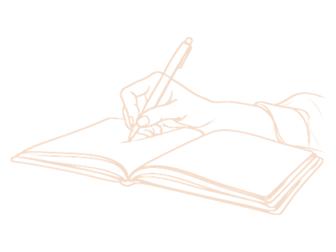
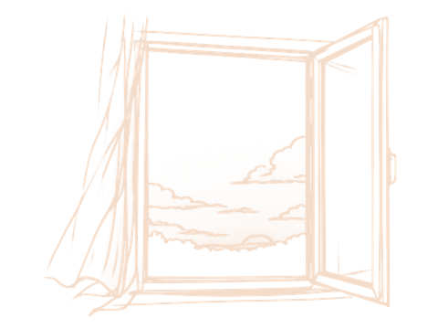
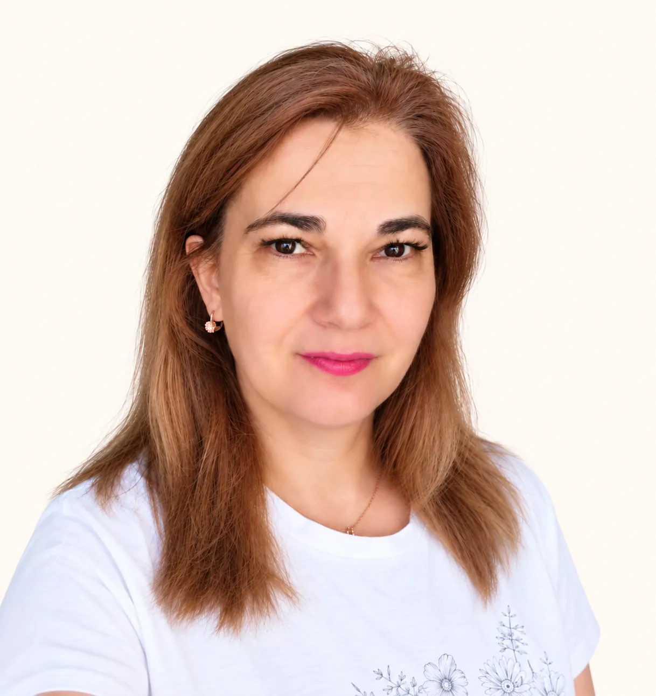

Прожить прямо сейчас
1 000 ₽
Когда произошло что-то, после чего трудно есть, спать, работать и оставаться с этим одной.
- Одна встреча онлайн
- Причину разбирать не будем — это про сегодня. И это не знакомство и не пробная встреча
Психолог про отношения
Меняется состояние — и из другого состояния приходят другие решения
Напишите, даже если не знаете, с чего начать. Я отвечу и расспрошу сама — дальше уже не одна

С чем ко мне приходят
Мы уже три недели почти не разговариваем. И я не знаю, как это исправить.
Я хочу просто выспаться. Мне уже ничего больше не хочется.
Мне всё чаще кажется, что со мной что-то не так.
Я узнала, что он мне изменяет. И не понимаю, как теперь с ним жить.
У меня появился другой.
Как это происходит

Можно как есть, хоть одной строкой. Не нужно заранее формулировать запрос или рассказывать всю историю: я отвечу, задам вопросы, если нужно, и дальше сориентируемся

Встречаемся онлайн в MAX или Телемосте, я пришлю ссылку. Важно, чтобы вы были одни в комнате и вас никто не отвлекал, и обязательно с включённой камерой: для моей работы важно вас видеть. Если есть возможность, поставьте рядом второй стул

Расспрошу вас о ситуации: что случилось, что сейчас беспокоит больше всего, что вы чувствуете. По ходу разговора у меня появляются предположения, с чем тут можно работать и куда идти дальше

Заранее сказать, как именно пройдёт встреча, нельзя. Иногда больше разговариваем: если ситуация острая, вам в первую очередь нужно проговорить то, что происходит. Иногда работаем с образами и чувствами, можем использовать второй стул. Иногда беру метафорические карты или фигурки на онлайн-платформе. Способ я выбираю уже во время встречи — по тому, с чем вы пришли. Около часа, иногда полтора — доплачивать не нужно

Смотрим, что изменилось за время работы, что вы сейчас чувствуете и с чем уходите. Иногда даю домашнее задание, иногда оно вообще не нужно. А понаблюдать после встречи за собой и своим состоянием попрошу в любом случае
Специально готовиться к встрече не нужно. Не надо придумывать «правильный запрос» или заранее составлять рассказ — можно прийти и начать с того, что беспокоит больше всего
Кто я
Юлия Судоргина · психолог про отношения
Я не продаю консультации любой ценой. У меня есть стабильная работа, поэтому мне не нужно навязывать вам лишние консультации.
Если вижу, что могу помочь — работаем. А если вижу, что вы уже справляетесь сами — в добрый путь. Я не буду костылём на всю жизнь.
У меня нет бесплатной встречи «на знакомство». Если вы пришли ко мне на сессию, мы сразу работаем по вашему запросу.
Я психолог-консультант. Диплом получила в 2024 году. Работаю с эмоционально-образной терапией, метафорическими картами и системными расстановками.
Там, где нужна медицинская помощь, не работаю — я психолог, не врач.
10 лет я в найме и каждый день работаю с разными людьми. За это время я научилась быстро находить общий язык.

Сколько стоит
Встреча идёт час, если нужно — полтора. Доплаты не будет
1 000 ₽
Когда произошло что-то, после чего трудно есть, спать, работать и оставаться с этим одной.
3 000 ₽
Когда хочется разобраться, что происходит, и понять, что делать дальше.
Написать мне10 000 ₽
2 500 ₽ за встречу. Встречаемся раз в неделю: между встречами вы делаете то, что решили, а на следующей смотрим, что получилось
Если после первой встречи поймёте, что я не ваш психолог, — верну деньги. Оплата за сутки до встречи, перенести или отменить — тоже за сутки. Я самозанятая, пришлю чек
Что говорят
Это было, казалось, просто, но одновременно глубоко. Юлины опыт и мудрость подсказывали ей слова, которые снимали засохшую корку с моих непрожитых чувств, и они пробивались из меня слезами и всхлипами. А на их место приходила тишина и догадка: «Я могу попробовать иначе». После мне захотелось делать домашние дела — третий час что-то тру и мою
Удивительно получилось! Я шла на сессию с одним запросом, а работали мы с детско-родительскими отношениями. После нашей встречи я впервые подумала о себе как о взрослой: раньше я всегда ощущала себя пятилетней девочкой и обижалась на всех. За время нашей сессии я повзрослела! Благодарю за чувство юмора, такт, за лёгкость и безопасность
Я пришла с одной темой, а работали мы, казалось бы, с совсем другой, но не менее важной для меня. Чувствуется твоя огромная подготовка в разных подходах психологии, умение смотреть вглубь, задавать прямые вопросы, от которых невозможно увильнуть.
Для меня было очень важно, что ты не исправляла мои «странные» формулировки фраз, а позволяла им быть такими, какие они есть, т.к. именно в том виде они являлись для меня особенно сильными.
Юлия, ты бережный и аккуратный психолог!
Вопросы
Никого вокруг мы не меняем. Работаем только с вами, приходить вдвоём не нужно
Шанс есть всегда. Если вы его себе не даёте, его и не будет. Дайте себе шанс сами
Готовиться не надо. Что первое придёт в голову, то и правильно, а расспрошу я сама
Да. Мне важно вас видеть — по лицу и по телу видно то, чего не слышно в словах
Когда вы видите сны, вы же не сходите с ума. И когда мечтаете — это тоже образы. С ними просто легче обойти защиты, чем разговорами
Бывает, что специалист просто не ваш. Если после первой встречи вы почувствуете, что я вам не подхожу или пользы не было, — верну деньги. Решаете вы, объяснять ничего не нужно
Последнее
Писать можно в любое время, хоть ночью. Не всегда отвечаю сразу, но без ответа не оставлю.
Юлия Судоргина · психолог про отношения
Самозанятая, ИНН 561006969300. Чек пришлю после оплаты
Телеграм @Juliasydorgina · MAX
© 2026